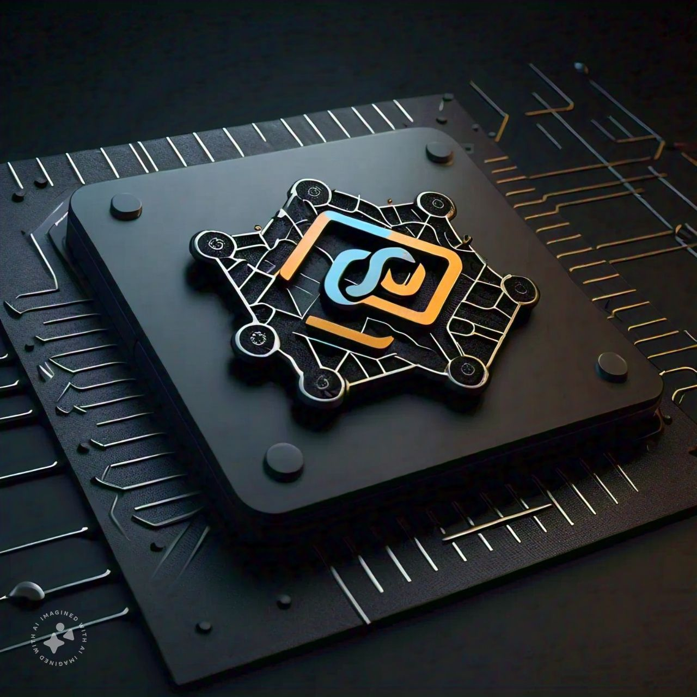

TensorFlow
TensorFlow is an open-source machine learning library developed by Google.
Here's more information about TensorFlow: What is TensorFlow? TensorFlow is an open-source software library for numerical computation, particularly well-suited and fine-tuned for large-scale Machine Learning (ML) and Deep Learning (DL) tasks. History TensorFlow was originally developed by the Google Brain team, led by Geoffrey Hinton, and was later open-sourced in 2015. Key Features 1. Distributed Training: TensorFlow allows for distributed training of models across multiple machines. 2. Auto-Differentiation: TensorFlow can automatically compute gradients, making it easier to optimize models. 3. Support for GPU and TPU: TensorFlow can run on GPU and TPU accelerators, making it faster for compute-intensive tasks. 4. Extensive Community Support: TensorFlow has a large and active community, with many pre-built models and tools available. Applications 1. Computer Vision: TensorFlow is widely used for image classification, object detection, and image segmentation tasks. 2. Natural Language Processing: TensorFlow is used for text classification, language translation, and sentiment analysis tasks. 3. Speech Recognition: TensorFlow is used for speech recognition and voice synthesis tasks. 4. Robotics: TensorFlow is used for control and navigation tasks in robotics. TensorFlow Ecosystem 1. TensorFlow Core: The core library for building and training models. 2. TensorFlow Lite: A lightweight version of TensorFlow for mobile and embedded devices. 3. TensorFlow.js: A JavaScript version of TensorFlow for web development. 4. TensorFlow Extended (TFX): A suite of tools for building, deploying, and managing ML pipelines. Advantages 1. Flexibility: TensorFlow allows for easy experimentation and prototyping. 2. Scalability: TensorFlow can handle large-scale datasets and distributed training. 3. Community Support: TensorFlow has a large and active community, with many pre-built models and tools available. Disadvantages 1. Steep Learning Curve: TensorFlow can be challenging to learn, especially for beginners. 2. Complexity: TensorFlow can be complex to use, especially for large-scale projects. I hope this provides more information about TensorFlow! Let me know if you have any further questions.PyTorch
PyTorch is an open-source machine learning library developed by Facebook.
Here's an overview of PyTorch: What is PyTorch? PyTorch is an open-source machine learning library developed by Facebook's AI Research Lab (FAIR). It is primarily used for building and training deep learning models. Key Features 1. Dynamic Computational Graph: PyTorch uses a dynamic computational graph, which allows for more flexibility and ease of use compared to static graphs used by other frameworks like TensorFlow. 2. Autograd System: PyTorch's Autograd system automatically computes gradients, making it easier to optimize models. 3. Modular Architecture: PyTorch has a modular architecture, making it easier to build and customize models. 4. Distributed Training: PyTorch supports distributed training, allowing users to scale up their training processes. 5. Extensive Community Support: PyTorch has a large and active community, with many pre-built models and tools available. Applications 1. Computer Vision: PyTorch is widely used for image classification, object detection, and image segmentation tasks. 2. Natural Language Processing: PyTorch is used for text classification, language translation, and sentiment analysis tasks. 3. Speech Recognition: PyTorch is used for speech recognition and voice synthesis tasks. 4. Robotics: PyTorch is used for control and navigation tasks in robotics. Advantages 1. Ease of Use: PyTorch is generally considered easier to use than other deep learning frameworks like TensorFlow. 2. Flexibility: PyTorch's dynamic computational graph and modular architecture make it more flexible than other frameworks. 3. Rapid Prototyping: PyTorch's ease of use and flexibility make it ideal for rapid prototyping. Disadvantages 1. Limited Support for Distributed Training: While PyTorch supports distributed training, it is not as robust as other frameworks like TensorFlow. 2. Smaller Community Compared to TensorFlow: While PyTorch has a large and active community, it is smaller than the community surrounding TensorFlow. PyTorch Ecosystem 1. PyTorch Core: The core library for building and training models. 2. Torchvision: A library for computer vision tasks. 3. Torchnlp: A library for natural language processing tasks. 4. PyTorch Ignite: A library for building and training models with a focus on ease of use and rapid prototyping.Keras
Keras is a high-level neural networks API that can run on top of TensorFlow, PyTorch, or Theano.
Here's an overview of Keras: What is Keras? Keras is a high-level, open-source deep learning library written in Python. It can run on top of TensorFlow, PyTorch, or Theano. Key Features 1. Easy to Use: Keras is designed to be easy to use, with a simple and intuitive API. 2. High-Level Abstraction: Keras provides a high-level abstraction, allowing users to focus on building and training models without worrying about the underlying details. 3. Modular Architecture: Keras has a modular architecture, making it easy to build and customize models. 4. Support for Multiple Backends: Keras can run on top of TensorFlow, PyTorch, or Theano, allowing users to choose the backend that best suits their needs. Applications 1. Computer Vision: Keras is widely used for image classification, object detection, and image segmentation tasks. 2. Natural Language Processing: Keras is used for text classification, language translation, and sentiment analysis tasks. 3. Speech Recognition: Keras is used for speech recognition and voice synthesis tasks. 4. Robotics: Keras is used for control and navigation tasks in robotics. Advantages 1. Easy to Learn: Keras is designed to be easy to learn, with a simple and intuitive API. 2. Fast Development: Keras allows for fast development and prototyping of deep learning models. 3. High-Level Abstraction: Keras provides a high-level abstraction, allowing users to focus on building and training models without worrying about the underlying details. Disadvantages 1. Limited Control: Keras provides a high-level abstraction, which can limit control over the underlying details. 2. Not Suitable for Low-Level Optimization: Keras is not suitable for low-level optimization tasks, which may require more control over the underlying details. Keras Ecosystem 1. Keras Core: The core library for building and training models. 2. Keras Applications: Pre-built applications for common deep learning tasks, such as image classification and language translation. 3. Keras Preprocessing: Utilities for preprocessing data, such as image and text preprocessing.